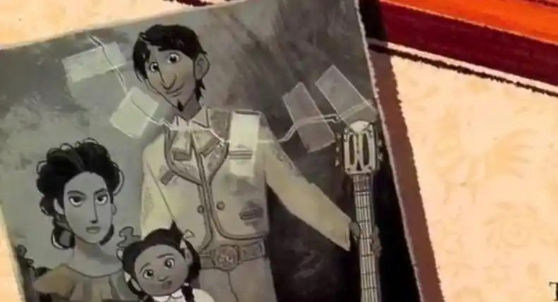

故事梗概
开端 ： 在一个热闹嘈杂的墨西哥小村庄，住着一个幸福的鞋匠世家。米格的父母、奶奶以及所有的家人都在埋头做鞋，热爱音乐的米格也只能躲在阁楼里，偷偷弹吉他。原因是他的曾曾祖父曾经因为音乐梦想想唱遍世界而抛弃家庭不知所踪。曾曾祖母怪他抛弃自己和年幼的女儿可可，于是她立下了誓言：以后家里绝对不可以有音乐，而曾曾祖父的遗像也不允许摆在灵堂。只有太奶奶可可依旧记着他，即使满头白发，牙齿都掉光，患了老年痴呆症，忘记了所有人，她还是会含糊不清的喊着“爸爸”。 就是如此，致使米格的音乐梦想成为全族的一个禁忌。但是决意为了梦想要闯荡的米格不顾这些，在亡灵节那天，家人要他继承家族鞋业从做鞋开始，而米格想参加当晚的才艺比赛，比赛需要一把乐器吉他，但是奶奶却把他的吉他摔断了，想实现自己的梦想的米格生气和家人吵架后负气出走。在亡灵节夜晚他偷偷跑去歌神的祭堂偷走歌神德拉库斯的吉他，而且他发现这把吉他就是家里供奉的曾曾祖父身边的那把吉他，尽管家人将曾曾祖父的照片头像撕了，但是那把吉他跟这个一模一样，心里认定这个自己的偶像，大音乐家德拉库斯就是自己的曾曾祖父，欣喜之余不料却误闯入了亡灵的世界里。 发展 ： 在亡灵的世界里，并不都是黑暗和凄苦，相反，米格看到一个稀奇绚丽多彩的世界，十分繁华，灯火通明，有绚烂的礼花，热闹的酒吧，人们在这里过着自在惬意的生活。米格尔被深深吸引和震撼。原来每年的这一天，亡灵们都可以通过严格的仪器扫描来确定是否可以通往铺满万寿菊的桥，到达人类世界看望他们牵挂的亲人。但是能通过桥的唯一要求是他们的照片要被家人摆在祭坛上，不被遗忘。虽然这种探望并不被家人所知，但却是亡灵最好的慰藉。 高潮： 米格在这里遇到了已故的曾曾祖母以及其他逝去的亲人们，他们想帮助米格返回人间。而返回人间的唯一方法就是得到亲人的祝福。但是曾曾祖母却提出了要他放弃音乐的要求，不然就不给他祝福。而他只有24个小时的机会。挣扎的米格想到了不用放弃梦想的方法，那就是找到已经变成亡灵的曾曾祖父德拉库斯。他相信曾经为了音乐离开家的曾曾祖父是不会让他放弃梦想的。 结局： 回到人世间的米格赶去见到了已经垂暮的太奶奶。此时的太奶奶可可已经不记得她的爸爸了，昏昏欲睡，垂垂老矣。这就意味着曾曾祖父埃克托要彻底地消失了。为了唤起太奶奶的回忆，米格含泪弹起她父亲写给可可的歌，听到歌声的她眼睛也有了光，渐渐恢复知觉，慢慢的跟着一起轻轻合唱。  这是她小时候最爱的音乐，老人家的回忆渐渐苏醒，缓缓的睁开眼，跟着一起唱“Remember me when I am gone away,Gone far away into the silent land”的时候，从抽屉里拿出被撕掉的照片一角，米格赶紧将之与供奉的照片一拼，原来，照片上的人就是埃克托！太奶奶也认出了他，不停地喊“爸爸，爸爸！”这样，曾曾祖父就不会因为没有人记起而彻底消失了。并且，以后每年的亡灵节，都可以回来与家人“团聚”。而且米格尔也可以自由的为梦想而歌唱了。 |